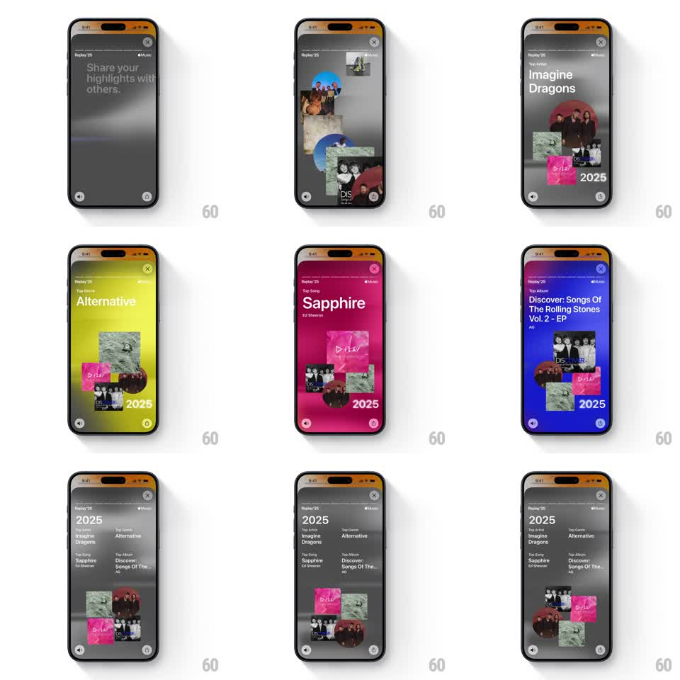

Media
Frame-by-frame

Rebuild this animation 1:1: Apple Music Replay '25 summary story - a recap sheet where the background morphs through each stat's story color while floating mini-cards (Top Artist, Top Genre, Top Song, Top Album) drift in staggered, ending on a gray "2025" summary list with a slowly drifting artwork collage.

Rebuild this animation 1:1: Apple Music Replay '25 summary story - a recap sheet where the background morphs through each stat's story color while floating mini-cards (Top Artist, Top Genre, Top Song, Top Album) drift in staggered, ending on a gray "2025" summary list with a slowly drifting artwork collage.
## Integration
Integration: stack-agnostic spec - springs given as stiffness/damping, timed motions as duration + curve; map every value to your framework and animation library of choice.
## Scene
Replay '25 chrome throughout. Opening: dark gray screen, "Share your highlights with others." Then a carousel of recap cards: each card carries one stat ("Top Artist Imagine Dragons", "Top Genre Alternative", "Top Song Sapphire", "Top Album Discover: Songs Of The Rolling Stones Vol. 2 - EP") with a small collage of artwork and a "2025" stamp, and the whole background floods with that stat's story color (gray, chartreuse, magenta, deep blue) as each card shows. Final: a gray summary page listing all four stats in text rows with the collage cluster drifting below.
## Motion spec
Pattern: color-morphing background + staggered floating cards, ~6s.
- Card cycle: each stat card scales/fades in center (spring ~320/18), holds ~900ms, then drifts down and fades as the next card enters from above (50px offset, 350ms overlap).
- Background morph: the full-screen color cross-fades to match the incoming card's story color (500ms, ease-in-out), always lagging the card entrance by ~100ms.
- Collage drift: within each card, the 4-6 artwork thumbnails float in loose formation with slow independent bob (6-12px, 2.5-4s periods).
- Summary page: rows fade/slide up (60ms stagger), then the collage cluster below drifts sideways in a slow loop (30px over 6s, ease-in-out alternate).
## Calibration
- The background color change is the transition - cards never wipe or slide the background.
- Keep the floating thumbnails' motion independent; synchronized bob reads as one rigid image.
## Reduced motion
Cards cross-fade without drift (250ms); background changes color with the same cross-fade, no lag; summary collage static.
## Don't miss
- Each stat keeps its own story color from the earlier stories - the summary is a tour of the whole palette.
- The final page lists all four stats at once; the earlier phase shows one at a time.